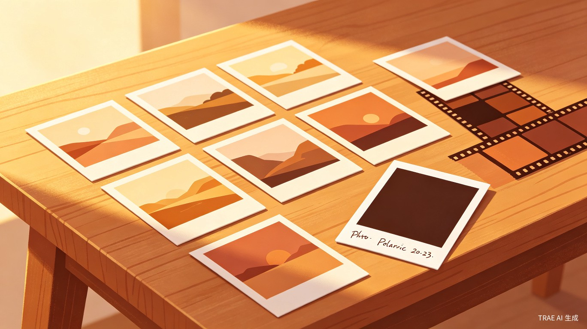
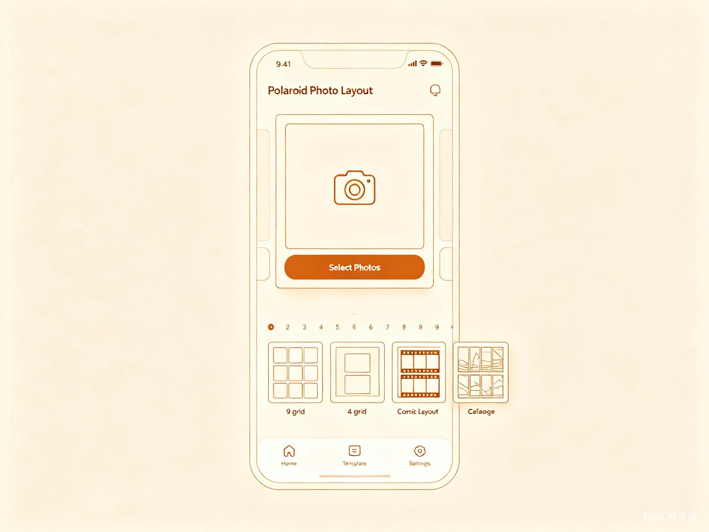
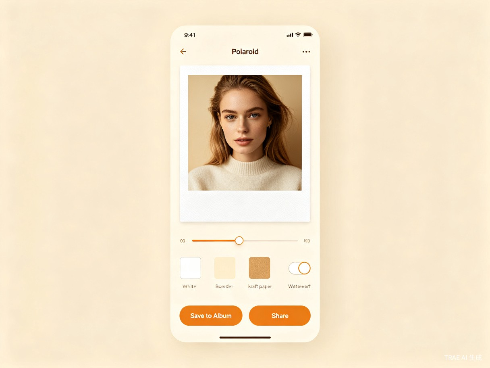
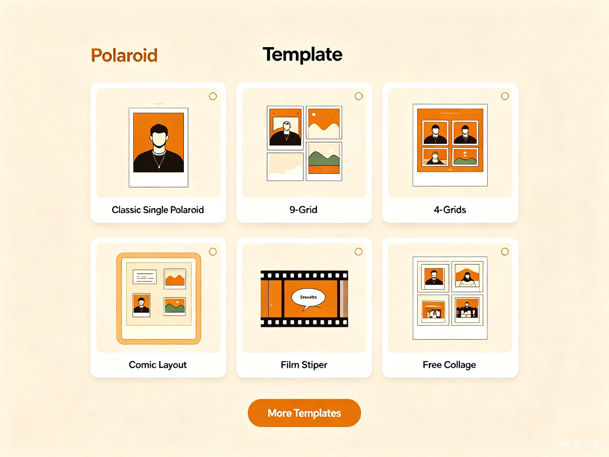
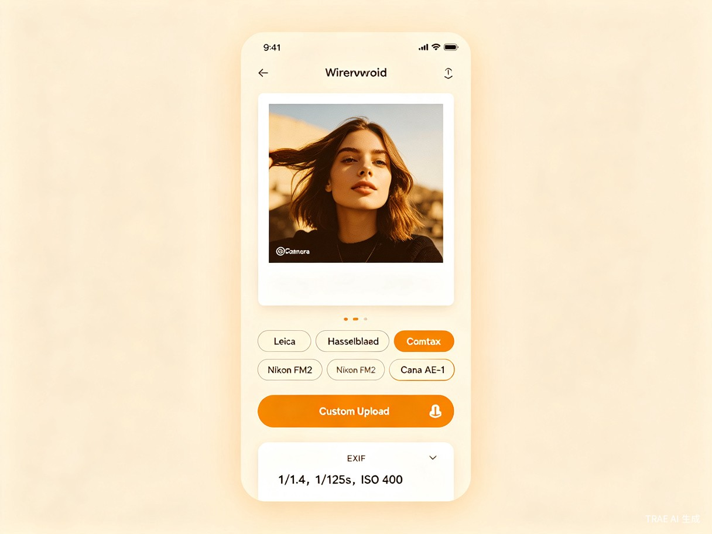

拍立得照片排版工具
从日常照片到复古拍立得 — 一键生成、多种布局、即刻分享
需求背景
社交媒体时代，用户对照片的诉求早已超越"记录"本身。一张照片的呈现方式——边框、排版、水印——正在成为个人审美的延伸。拍立得（Polaroid）作为一种经典的即时成像格式，凭借其白色宽边框、底部手写区域、胶片颗粒质感，在数字时代反而焕发出新的生命力。
然而，现有解决方案存在明显的断层。通用修图工具（如美图秀秀、Snapseed）虽然功能强大，但操作路径长、学习成本高，用户需要经过多步调整才能得到一张拍立得风格的照片。专门的拍立得 App（如 Bebo Cam）虽然风格出色，但作为独立应用，缺少与微信社交生态的整合——用户生成照片后还需额外保存、打开微信、再发送，流程断裂。
同时，拍立得文化在年轻用户群体中正处于复兴期。小红书上"拍立得"相关笔记超过百万篇，朋友圈中带拍立得边框的照片互动率显著高于普通照片。这背后是用户对复古质感、仪式感、独特审美的追求——他们需要的不是一款修图工具，而是一种快速赋予照片"故事感"的方式。
本产品的核心假设是：如果用户能在 30 秒内将一张普通照片转化为带有专业相机水印的拍立得风格图片，并以九宫格、四宫格等多种方式排版，这个工具将在微信生态内获得自然的传播和留存。
产品目标
本产品围绕四个核心目标展开设计，每一个目标都对应可量化的验收标准。
选图到出图
纯前端实现
MVP 阶段
Android <3s
用户体验目标
零学习成本，即开即用。用户打开小程序后，第一眼就能理解"选择照片 → 选择模板 → 保存"的三步流程。不提供冗余功能入口，不做引导页，让产品本身即是说明书。
技术目标
纯前端实现，无后端服务依赖。所有图片处理通过微信小程序 Canvas 2D API 在客户端完成，用户照片不上传到任何服务器，充分保护隐私。模板和水印素材通过 CDN 分发，小程序代码包控制在主包 2MB 以内。
商业目标
MVP 阶段聚焦用户增长和口碑传播。通过高质量模板和品牌水印建立产品辨识度，后续通过高级模板解锁、定制水印包等增值服务实现变现。
竞品分析
经过对市场现有产品的调研，选取三款具有代表性的竞品进行对比分析，以明确本产品的差异化定位。
| 维度 | 巧乐拼图小助手 | Bebo Cam | Photo Polaroid AI |
|---|---|---|---|
| 产品形态 | 微信小程序 | 独立 App（iOS/Android） | Web 端 |
| 核心功能 | 拼图排版、碎片重组、九宫格切图 | 拍立得胶片质感、复古滤镜、漏光效果 | AI 自动生成拍立得风格 |
| 拍立得边框 | 无专用拍立得模板 | 丰富的相纸库，多种拍立得型号 | 支持 SX-70、600、Instax 等型号 |
| 相机水印 | 不支持 | 不支持品牌水印 | 不支持 |
| 布局模式 | 网格拼图为主 | 单张为主，少量拼图 | 单张为主 |
| 微信生态整合 | 原生整合，分享便捷 | 需跳转微信分享 | 无微信整合 |
| 用户规模 | 500 万+用户 | 中量级 | 小众工具 |
| 主要不足 | UI 设计陈旧，模板质量参差不齐，无拍立得风格 | 非微信生态，操作流程断裂，缺少手动布局控制 | 缺少手动控制，依赖 AI，输出不可预测 |
差异化定位
本产品切入的空白地带是：微信生态内 + 专业拍立得风格 + 相机品牌水印 + 多种布局模式的交叉点。巧乐拼图拥有微信生态优势但缺少拍立得风格；Bebo Cam 拥有拍立得风格但缺少微信整合和品牌水印；Photo Polaroid AI 拥有拍立得生成能力但缺少手动控制和社交整合。
用户画像与场景
目标用户
社交内容创作者
25–35 岁，女性为主，活跃于小红书和朋友圈。她们追求照片的审美质感，愿意花时间让照片"看起来不一样"，但不愿意学习复杂的修图工具。拍立得边框和品牌水印能为她们的内容增加辨识度和专业感。
复古摄影爱好者
20–30 岁，男女均衡，对胶片文化有情感认同。他们可能拥有或向往一台真实的拍立得相机，但日常使用数字设备拍摄。本产品让他们能快速给数字照片赋予胶片质感。
日常记录用户
全年龄段，使用频率低（每月 1–3 次），通常在特定场景下触发使用：旅行归来整理照片、生日聚会后制作纪念图、节日朋友圈配图。他们需要的是"快速出图"而非"精细调整"。
核心使用场景
- 旅行归来整理照片 — 从手机相册中挑选 9 张旅行照片，使用九宫格布局生成一张拍立得风格拼图，添加 Leica 水印，保存到相册后分享到朋友圈
- 日常随拍快速出图 — 拍摄一张咖啡、一本书或一处街景，选择经典单张拍立得模板，添加日期和相机水印，30 秒内保存分享
- 朋友圈/小红书配图 — 使用四宫格布局将多张同类照片（如美食、穿搭）组合，添加统一的水印风格，形成系列感
- 节日纪念制作 — 生日、纪念日等场景，使用漫画布局为照片添加对话气泡和装饰元素，制作趣味纪念图
功能需求
功能模块围绕"选图 → 排版 → 出图"的核心路径展开，所有功能均通过 Canvas 2D API 在客户端完成渲染。
mindmap
root((拍立得排版工具))
照片导入
相册选择
拍照
裁剪旋转
边框生成
经典白色边框
边框宽度调节
颜色与纹理
手写日期区域
布局模式
经典单张
九宫格
四宫格
漫画布局
胶片条
拼贴布局
水印系统
预设品牌水印
自定义上传
EXIF 信息提取
位置与样式
保存与分享
保存到相册
分享到朋友圈
分享给好友
功能优先级矩阵
| 编号 | 模块 | 功能描述 | 优先级 |
|---|---|---|---|
| F-01 | 照片导入 | 支持从手机相册选择照片（单张/多张），支持直接调用摄像头拍照。通过 wx.chooseImage 实现，获取临时文件路径后进入编辑流程。 | P0 |
| F-02 | 图片裁剪与旋转 | 提供基础裁剪（自由比例/1:1/4:3/3:4）和 90 度旋转功能，确保照片适配拍立得边框比例。 | P0 |
| F-03 | 经典拍立得边框 | 在照片四周添加经典白色边框（底部区域更宽），支持调节边框宽度。通过 Canvas fillRect 绘制白色矩形区域，将照片绘制在内部。 | P0 |
| F-04 | 手写日期区域 | 在拍立得边框底部提供手写风格日期文字，默认填充当前日期，支持用户手动修改内容和位置。 | P0 |
| F-05 | 九宫格布局 | 将 9 张照片排列为 3x3 网格，每张照片独立添加拍立得边框，整体输出为一张合成图。 | P0 |
| F-06 | 四宫格布局 | 将 4 张照片排列为 2x2 网格，每张照片独立添加拍立得边框，整体输出为一张合成图。 | P0 |
| F-07 | 预设品牌水印 | 提供 5 款经典相机品牌水印（Leica、Hasselblad、Contax、Nikon FM2、Canon AE-1），以铭牌风格渲染在照片角落。 | P0 |
| F-08 | 保存到相册 | 将 Canvas 渲染结果导出为图片文件，调用 wx.saveImageToPhotosAlbum 保存到用户手机相册。包含完整的权限授权引导流程。 | P0 |
| F-09 | 漫画布局 | 将照片以漫画分格方式排列，支持添加对话气泡、效果文字（如"BOOM"、"CLICK"）和速度线装饰。 | P1 |
| F-10 | 胶片条布局 | 将多张照片以 35mm 胶片条形式连续排列，顶部和底部添加胶片齿孔装饰，模拟真实胶片效果。 | P1 |
| F-11 | 自定义水印上传 | 允许用户上传自定义水印图片（PNG 透明背景），支持调节水印大小、位置和透明度。 | P1 |
| F-12 | EXIF 信息提取 | 自动读取照片 EXIF 数据（光圈、快门速度、ISO），在水印区域展示拍摄参数。 | P1 |
| F-13 | 拼贴布局 | 自由角度旋转和叠放多张拍立得照片，支持手动调整每张的位置、角度和层叠顺序。 | P2 |
| F-14 | 边框颜色与纹理 | 除经典白色外，提供米白、牛皮纸纹理、黑色等边框样式选项。 | P2 |
| F-15 | 分享到朋友圈/好友 | 生成分享海报图，调用微信原生分享能力，将成品图分享到朋友圈或发送给好友。 | P1 |
核心模块详细说明
F-03 经典拍立得边框
业务逻辑：用户选择照片后，系统在 Canvas 上按照"外框 → 内图 → 底部文字区"的顺序分层绘制。外框为白色矩形，顶部和左右留白较窄（约 3%），底部留白较宽（约 12%），模拟真实拍立得相纸比例。照片绘制在内部区域，保持原始比例居中裁剪。
交互逻辑：提供边框宽度滑块（窄/中/宽三档），用户拖动滑块实时预览效果。底部文字区域默认显示当前日期（如 "2026.06.17"），点击可进入编辑模式修改文字内容和字号。
规则约束：Canvas 绘制尺寸不超过 4096px，超出时自动降采样。导出图片分辨率根据原始照片尺寸动态计算，确保清晰度。
F-07 预设品牌水印
业务逻辑：每种品牌水印包含品牌 Logo 图形和机型名称文字，以铭牌风格渲染。默认位置为照片右下角（拍立得边框内），用户可切换为左下角。水印素材以 SVG 格式存储在 CDN，通过 wx.downloadFile 获取后绘制到 Canvas。
交互逻辑：水印设置面板以水平滚动的品牌标签形式展示，点击切换品牌。提供水印开关，关闭后不绘制水印。支持水印透明度调节（0%–100%）。
规则约束：水印素材文件单张不超过 50KB，确保 CDN 加载速度。品牌水印仅用于个人非商业用途，产品内需展示使用免责声明。
F-08 保存到相册
业务逻辑：Canvas 渲染完成后，调用 wx.canvasToTempFilePath 导出为临时图片文件，再调用 wx.saveImageToPhotosAlbum 保存到系统相册。
交互逻辑：首次保存时自动弹出微信授权弹窗。若用户拒绝，在保存按钮旁显示"去设置"入口，引导用户通过 wx.openSetting 手动开启权限。授权成功后直接保存，页面显示"已保存"提示。
边界处理：网络图片需先下载到本地临时路径；Canvas 导出失败时提示用户重试；Android 低端机内存不足时降低导出分辨率。
交互原型
以下原型展示了产品核心界面的布局和信息层级。原型采用线框风格，聚焦于功能区域划分和交互流程，视觉设计细节由设计阶段确定。

主界面

A. 核心操作入口 B. 布局模板选择 C. 底部导航栏编辑器界面

A. 实时预览区域 B. 边框与样式调节 C. 水印开关 D. 保存与分享按钮

技术架构
产品采用纯前端架构，所有图片处理在微信小程序客户端通过 Canvas 2D API 完成，不依赖任何后端服务。
核心渲染流程
flowchart LR
A["用户选择照片"] --> B["图片预处理
裁剪/旋转/压缩"]
B --> C["选择布局模板"]
C --> D["Canvas 2D 渲染
绘制边框+网格"]
D --> E["添加水印
品牌/自定义/EXIF"]
E --> F["Canvas 导出
canvasToTempFilePath"]
F --> G{用户操作}
G -->|保存| H["请求相册权限
scope.writePhotosAlbum"]
G -->|分享| I["生成分享海报"]
H --> J["saveImageToPhotosAlbum"]
I --> J
模块依赖架构
flowchart TD
subgraph 页面层
Home["首页"]
Editor["编辑器页"]
TemplateSelect["模板选择"]
WatermarkSettings["水印设置"]
end
subgraph 核心引擎
CanvasEngine["Canvas 渲染引擎"]
TemplateManager["模板管理器"]
WatermarkEngine["水印引擎"]
ImageProcessor["图片处理器"]
end
subgraph 数据层
TemplateStore["模板配置 JSON"]
WatermarkAssets["水印素材 CDN"]
UserSettings["用户设置 Storage"]
end
Home --> TemplateSelect
TemplateSelect --> Editor
Editor --> WatermarkSettings
Editor --> CanvasEngine
CanvasEngine --> TemplateManager
CanvasEngine --> WatermarkEngine
CanvasEngine --> ImageProcessor
TemplateManager --> TemplateStore
WatermarkEngine --> WatermarkAssets
Editor --> UserSettings
关键技术决策
- Canvas 2D API：采用新版 Canvas 2D 接口（type="2d"），与浏览器原生 Canvas 标准一致，支持离屏渲染（createOffscreenCanvas），避免 ScrollView 内不能使用 Canvas 的限制
- 模板配置驱动：每种布局模板由 JSON 配置文件定义（网格行列数、间距、边框参数、绘制顺序），新增布局只需添加配置文件，无需修改渲染引擎代码
- CDN 资源管理：水印素材（SVG/PNG）和边框纹理资源部署在 CDN，通过 wx.downloadFile 按需下载，不占用小程序代码包空间
- devicePixelRatio 适配：Canvas 画布尺寸乘以 devicePixelRatio 以保证导出清晰度，同时通过 ctx.scale() 缩放绘图上下文，确保坐标计算一致
非功能需求
| 类别 | 指标 | 目标值 | 说明 |
|---|---|---|---|
| 性能 | iOS 冷启动时间 | ≤ 1.2s | 从小程序入口到首页可交互的时间 |
| Android 冷启动时间 | ≤ 3.0s | 同上 | |
| 单张照片渲染时间 | ≤ 2s | 从选择模板到 Canvas 渲染完成 | |
| 兼容性 | 基础库版本 | ≥ 2.19.0 | Canvas 2D API 最低版本要求 |
| 系统版本 | iOS 12+ / Android 7.0+ | 覆盖 95%+ 微信活跃用户 | |
| 包体积 | 主包大小 | < 2MB | 仅包含首页和编辑器核心页面 |
| 总包大小 | < 20MB | 含分包（模板库、设置页等） | |
| Canvas | 最大画布尺寸 | 4096 x 4096 px | 超出时自动降采样 |
| 内存管理 | 及时回收 | 绘制完成后释放 Canvas 上下文，避免多张大图同时驻留内存 | |
| 隐私 | 数据存储 | 纯本地 | 用户照片不上传服务器，所有处理在客户端完成 |
| 权限 | 相册写入 | scope.writePhotosAlbum | 含完整的授权引导和拒绝处理流程 |
版本路线图
产品采用渐进式迭代策略，MVP 聚焦核心路径的完整闭环，后续版本逐步扩展布局模板和智能功能。
timeline
title 产品版本路线图
section V1.0 MVP
经典拍立得生成 : 白色边框 + 手写日期
基础布局 : 九宫格 + 四宫格
品牌水印 : 5 款预设相机水印
保存功能 : 相册保存 + 权限引导
section V1.1 扩展
新增布局 : 漫画布局 + 胶片条
水印增强 : 自定义上传 + EXIF 提取
分享能力 : 朋友圈海报 + 好友分享
section V1.2 进阶
高级布局 : 拼贴布局（自由角度）
边框样式 : 牛皮纸/黑色等纹理
滤镜效果 : 复古胶片色调
section V2.0 生态
社区模板 : 用户上传分享模板
AI 能力 : 风格迁移 + 智能排版
视频拍立得 : 短视频拍立得风格
V1.0 MVP 范围
MVP 版本聚焦"选照片 → 选模板 → 加水印 → 保存"的完整闭环。包含经典单张拍立得生成、九宫格和四宫格两种网格布局、5 款预设品牌水印、以及完整的相册保存和权限管理。这一版本的目标是验证用户对"微信内快速生成拍立得照片"这一核心场景的需求。
V1.1 扩展方向
在 MVP 基础上新增漫画布局和胶片条布局，丰富排版选择。水印系统增加自定义上传功能和 EXIF 信息自动提取，满足专业用户对拍摄参数展示的需求。同时完善社交分享能力，支持生成朋友圈海报和直接分享给好友。